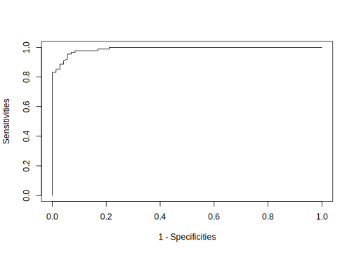
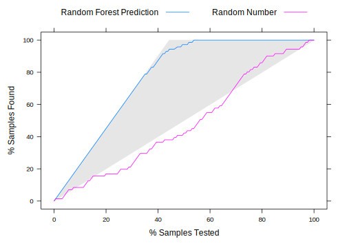

8.2 Classification Model Performance
This section focuses on performance measurement for models with a categorical response. The metrics in the previous section are for models with a continuous response and they are not appropriate in the context of classification. Most of the classification problems are dichotomous, such as an outbreak of disease, spam email, etc. There are also cases with more than two categories as the segments in the clothing company data. We use swine disease data to illustrate different metrics. Let’s train a random forest model as an example. We will discuss the model in Chapter 11.
disease_dat <- read.csv("http://bit.ly/2KXb1Qi")
# you can check the data using glimpse()
# glimpse(disease_dat)The process includes (1) separate the data to be training and testing sets, (2) fit model using training data (xTrain and yTrain), and (3) applied the trained model on testing data (xTest and yTest) to evaluate model performance.
We use 70% of the sample as training and the rest 30% as testing.
set.seed(100)
# separate the data to be training and testing
trainIndex <- createDataPartition(disease_dat$y, p = 0.8,
list = F, times = 1)
xTrain <- disease_dat[trainIndex, ] %>% dplyr::select(-y)
xTest <- disease_dat[-trainIndex, ] %>% dplyr::select(-y)
# the response variable need to be factor
yTrain <- disease_dat$y[trainIndex] %>% as.factor()
yTest <- disease_dat$y[-trainIndex] %>% as.factor()Train a random forest model:
train_rf <- randomForest(yTrain ~ .,
data = xTrain,
mtry = trunc(sqrt(ncol(xTrain) - 1)),
ntree = 1000,
importance = T)Apply the trained random forest model to the testing data to get two types of predictions:
- probability (a value between 0 to 1)
yhatprob <- predict(train_rf, xTest, "prob")
set.seed(100)
car::some(yhatprob)## 0 1
## 47 0.831 0.169
## 101 0.177 0.823
## 196 0.543 0.457
## 258 0.858 0.142
## 274 0.534 0.466
## 369 0.827 0.173
## 389 0.852 0.148
## 416 0.183 0.817
## 440 0.523 0.477
## 642 0.836 0.164- category prediction (0 or 1)
yhat <- predict(train_rf, xTest)
car::some(yhat)## 146 232 269 302 500 520 521 575 738 781
## 0 0 1 0 0 0 1 0 0 0
## Levels: 0 1We will use the above two types of predictions to show different performance metrics.
8.2.1 Confusion Matrix
Confusion Matrix is a counting table to describe the performance of a classification model. For the true response yTest and prediction yhat, the confusion matrix is:
yhat = as.factor(yhat) %>% relevel("1")
yTest = as.factor(yTest) %>% relevel("1")
table(yhat, yTest)## yTest
## yhat 1 0
## 1 56 1
## 0 15 88The top-left and bottom-right are the numbers of correctly classified samples. The top-right and bottom-left are the numbers of wrongly classified samples. A general confusion matrix for a binary classifier is following:
| Predicted Yes | Predicted No | |
|---|---|---|
| Actual Yes | TP | FN |
| Actual No | FP | TN |
where TP is true positive, FP is false positive, TN is true negative, FN is false negative. The cells along the diagonal line from top-left to bottom-right contain the counts of correctly classified samples. The cells along the other diagonal line contain the counts of wrongly classified samples. The most straightforward performance measure is the total accuracy which is the percentage of correctly classified samples:
\[Total\ accuracy = \frac{TP+TN}{TP+TN+FP+FN}\]
You can calculate the total accuracy when there are more than two categories. This statistic is straightforward but has some disadvantages. First, it doesn’t differentiate different error types. In a real application, different types of error may have different impacts. For example, it is much worse to tag an important email as spam and miss it than failing to filter out a spam email. Provost et al. (Provost F 1998) discussed in detail about the problem of using total accuracy on different classifiers. There are some other metrics based on the confusion matrix that measure different types of error.
Precision is a metric to measure how accurate positive predictions are (i.e. among those emails predicted as spam, how many percentages of them are spam emails?):
\[precision = \frac{TP}{TP+FP}\]
Sensitivity is to measure the coverage of actual positive samples (i.e. among those spam emails, how many percentages of them are predicted as spam) :
\[Sensitivity = \frac{TP}{TP+FN}\]
Specificity is to measure the coverage of actual negative samples (i.e. among those non-spam emails, how many percentages of them pass the filter):
\[Specificity = \frac{TN}{TN+FP}\]
Since wrongly tagging an important email as spam has a bigger impact, in the spam email case, we want to make sure the model specificity is high enough.
Second, total accuracy doesn’t reflect the natural frequencies of each class. For example, the percentage of fraud cases for insurance may be very low, like 0.1%. A model can achieve nearly perfect accuracy (99.9%) by predicting all samples to be negative. The percentage of the largest class in the training set is also called the no-information rate. In this example, the no-information rate is 99.9%. You need to get a model that at least beats this rate.
8.2.2 Kappa Statistic
Another metric is the Kappa statistic. It measures the agreement between the observed and predicted classes. It was originally come up by Cohen etc. (J 1960). Kappa takes into account the accuracy generated simply by chance. It is defined as:
\[Kappa=\frac{P_{0}-P_{e}}{1-P_{e}}\]
Let \(n=TP+TN+FP+FN\) be the total number of samples, where \(P_{0}=\frac{TP+TN}{n}\) is the observed accuracy, \(P_{e}=\frac{(TP+FP)(TP+FN)+(FN+TN)(FP+TN)}{n^{2}}\) is the expected accuracy based on the marginal totals of the confusion matrix. Kappa can take on a value from -1 to 1. The higher the value, the higher the agreement. A value of 0 means there is no agreement between the observed and predicted classes, while a value of 1 indicates perfect agreement. A negative value indicates that the prediction is in the opposite direction of the observed value. The following table may help you “visualize” the interpretation of kappa (Landis JR 1977):
| Kappa | Agreement |
|---|---|
| < 0 | Less than chance agreement |
| 0.01–0.20 | Slight agreement |
| 0.21– 0.40 | Fair agreement |
| 0.41–0.60 | Moderate agreement |
| 0.61–0.80 | Substantial agreement |
| 0.81–0.99 | Almost perfect agreement |
In general, a value between 0.3 to 0.5 indicates a reasonable agreement. If a model has a high accuracy of 90%, while the expected accuracy is also high, say 85%. The Kappa statistics is \(\frac{1}{3}\). It means the prediction and the observation have a fair agreement. You can calculate Kappa when the number of categories is larger than 2. The package fmsb has a function Kappa.test() to calculate Cohen’s Kappa statistics. The function can also return the hypothesis test result and a confidence interval. Use the above observation vector yTest and prediction vector yhat as an example, you can calculate the statistics:
# install.packages("fmsb")
kt<-fmsb::Kappa.test(table(yhat,yTest))
kt$Result##
## Estimate Cohen's kappa statistics and test the
## null hypothesis that the extent of agreement is
## same as random (kappa=0)
##
## data: table(yhat, yTest)
## Z = 9.7, p-value <2e-16
## 95 percent confidence interval:
## 0.6972 0.8894
## sample estimates:
## [1] 0.7933The output of the above function contains an object named Judgement:
kt$Judgement## [1] "Substantial agreement"8.2.3 ROC
Receiver Operating Characteristic (ROC) curve uses the predicted class probabilities and determines an effective threshold such that values above the threshold are indicative of a specific event. We have shown the definitions of sensitivity and specificity above. The sensitivity is the true positive rate and specificity is true negative rate. “1 - specificity” is the false positive rate. ROC is a graph of pairs of true positive rate (sensitivity) and false positive rate (1-specificity) values that result as the test’s cutoff value is varied. The Area Under the Curve (AUC) is a common measure for two-class problem. There is usually a trade-off between sensitivity and specificity. If the threshold is set lower, then there are more samples predicted as positive and hence the sensitivity is higher. Let’s look at the predicted probability yhatprob in the swine disease example. The predicted probability object yhatprob has two columns, one is the predicted probability that a farm will have an outbreak, the other is the probability that farm will NOT have an outbreak. So the two add up to have value 1. We use the probability of outbreak (the 2nd column) for further illustration. You can use roc() function to get an ROC object (rocCurve) and then apply different functions on that object to get needed plot or ROC statistics. For example, the following code produces the ROC curve:
rocCurve <- pROC::roc(response = yTest,
predictor = yhatprob[,2])## Setting levels: control = 1, case = 0## Setting direction: controls > casesplot(1-rocCurve$specificities,
rocCurve$sensitivities,
type = 'l',
xlab = '1 - Specificities',
ylab = 'Sensitivities')
The first argument of the roc() is, response, the observation vector. The second argument is predictor is the continuous prediction (probability or link function value). The x-axis of ROC curve is “1 - specificity” and the y-axis is “sensitivity.” ROC curve starts from (0, 0) and ends with (1, 1). A perfect model that correctly identifies all the samples will have 100% sensitivity and specificity which corresponds to the curve that also goes through (0, 1). The area under the perfect curve is 1. A model that is totally useless corresponds to a curve that is close to the diagonal line and an area under the curve about 0.5.
You can visually compare different models by putting their ROC curves on one plot. Or use the AUC to compare them. DeLong et al. came up a statistic test to compare AUC based on U-statistics (E. R. DeLong 1988) which can give a p-value and confidence interval. You can also use bootstrap to get a confidence interval for AUC (Hall P 2004).
We can use the following code in R to get an estimate of AUC and its confidence interval:
# get the estimate of AUC
auc(rocCurve)## Area under the curve: 0.989# get a confidence interval based on DeLong et al.
ci.auc(rocCurve)## 95% CI: 0.979-0.999 (DeLong)AUC is robust to class imbalance (Provost F 1998; F. T 2006) hence a popular measurement. But it still boils a lot of information down to one number so there is inevitably a loss of information. It is better to double check by comparing the curve at the same time. If you care more about getting a model that will have high specificity, which is the lower part of the curve, as in the spam filtering case, you can use the area of the lower part of the curve as the performance measurement (D 1989). ROC is only for two-class case. Some researchers generalized it to situations with more than two categories (Hand D 2001; Lachiche N 2003; Li J 2008).
8.2.4 Gain and Lift Charts
Gain and lift chart is a visual tool for evaluating the performance of a classification model. In the previous swine disease example, there are 160 samples in the testing data and 89 of them have a positive outcome.
table(yTest)## yTest
## 1 0
## 71 89If we order the testing samples by the predicted probability, one would hope that the positive samples are ranked higher than the negative ones. That is what the lift charts do: rank the samples by their scores and calculate the cumulative positive rate as more samples are evaluated. In the perfect scenario, the highest-ranked 71 samples would contain all 71 positive samples. When the model is totally random, the highest-ranked x% of the data would contain about x% of the positive sample. The gain/lift charts compare the ratio between the results obtained with and without a model.
Let’s plot the lift charts to compare the predicted outbreak probability (modelscore <- yhatprob[ ,2]) from random forest model we fit before with some random scores generated from a uniform distribution (randomscore <- runif(length(yTest))).
# predicted outbreak probability
modelscore <- yhatprob[ ,2]
# randomly sample from a uniform distribution
randomscore <- runif(length(yTest))
labs <- c(modelscore = "Random Forest Prediction",
randomscore = "Random Number")
liftCurve <- caret::lift(yTest ~ modelscore + randomscore,
class = "1",
labels = labs)
xyplot(liftCurve, auto.key = list(columns = 2, lines = T, points = F))
The x-axis is the percentage of samples tested and the y-axis is the percentage of positive samples that are detected by the model. For example, the point on the curve of random forest prediction, (8.125, 18.31) , indicates that if you order the testing samples by the predicted probability from high to low, the top 8.125% of the samples contain 18.31% of the total positive outcomes.
Similar to the ROC curve, we can choose the model by comparing their lift charts. Some parts of the lift curves may be more interesting than the rest. For example, if you only have a budget to clean 50% of the farms, then you should pick the model that gives the highest point when the x-axis is 50%.